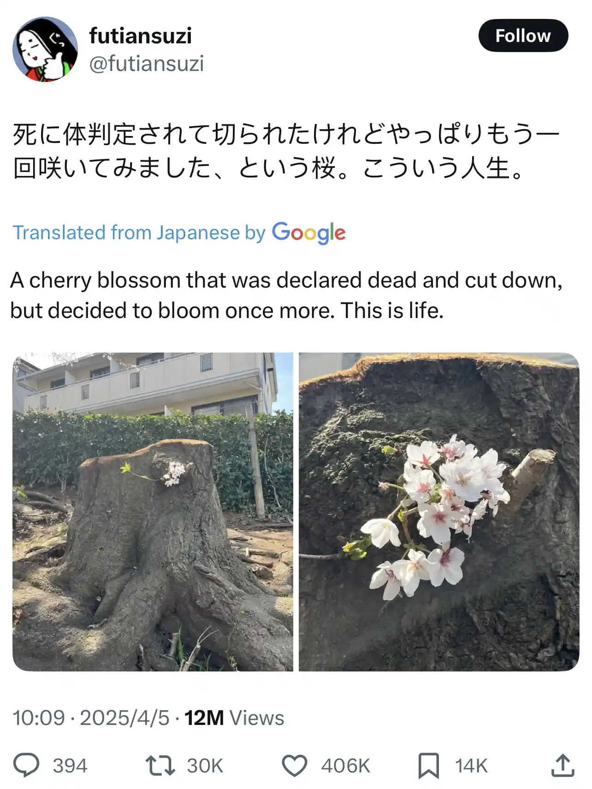

Happy Wednesday! Thank you for supporting the Daily Bulletin project.
- Suggest improvements to the Daily Bulletin project.
Wellbeing Inspirations
Want to contribute to a future Daily Bulletin? Share your inspirations to give everyone some morning wellbeing energy!
Photo of the Day

Retrieved from X (Twitter).
Delicious Dinings
| Day | Meal | Options |
|---|---|---|
| Wed | Breakfast | Hot Breakfast |
| Lunch | Panner & Tomato Curry 🌱 | |
| Onion Raita 🌱 | ||
| Dinner | Tuna Casserole Bake | |
| Mushroom & Potato Gnocchi 🌱 | ||
| Thu | Breakfast | Continental Counter |
| Lunch | Beef Bolognese | |
| Creamy Mushroom & Edamame Pasta 🌱 | ||
| Dinner | Vegetarian Nasi Goreng 🌱 |
The catering team would like to remind everyone to wash their hands before coming to the dining hall, and to refrain from eating in the servery area. Thank you!
Retrieved from Shared Weekly Menu. For reference only; accuracy not guaranteed.
Important Events
| Day | Time | Event | Location |
|---|---|---|---|
| Wed | 17:00–19:00 | Wellbeing Drop-in | Health Centre |
| Thu | 17:30–19:00 | Dinner: Stacked (hash Brown Concept With Tasty Toppings.) | nan |
| 19:00–20:00 | Owl Walk With Aditya | Susco Cabin |
Retrieved from What's On This Week.
Today in History
- 1583 – The siege of Godesberg, the first major siege of the Cologne War, began.
- 1809 – Napoleonic Wars: In the Bay of Bengal, a squadron of French frigates captured three ships carrying recruits for the armies of the East India Company.
- 1956 – At the Polish embassy in Moscow, a phrase in an address by Soviet leader Nikita Khrushchev was translated into English as "We will bury you", prompting Western envoys to leave the room.
- 1991 – Croatian War of Independence: The Yugoslav People's Army captured the Croatian city of Vukovar, ending an 87-day siege.
- 2011 – The sandbox video game Minecraft exited beta with the official release of version 1.0.
Retrieved from Wikipedia.